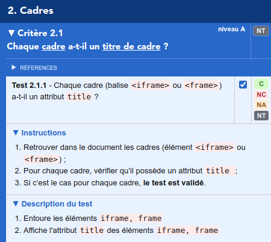
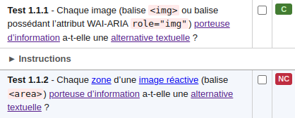

Aide Assistant RGAA
Cette extension propose une liste complète des tests du référentiel RGAA. Pour chacun de ces tests, l'extension permet d'appliquer des modifications à la page courante (modifications de style, ajout d'informations, outils), permettant d'effectuer plus simplement les tests.
Interface
Menu principal

- Version du référentiel utilisée
- À l'heure actuelle, seule les versions 3-2016, 3-2017, 4.0 (2019), 4.1 (2021) et 4.1.2 (2023) sont supportées.
- Aide
- Vous y êtes !
- Options
- Options globales de l'extension, permettant notamment de configurer la version du référentiel à utiliser.
- Mode popup
- Grâce à ce menu, l'extension peut-être ouverte dans une fenêtre séparée.
- Menu de navigation dans les thématiques
- Comme dans le référentiel, les tests sont d'abord organisés par thématiques. Ces thématiques sont visibles au premier niveau de la liste des tests, et accessibles par un menu déroulant présent dans le menu principal.
- Activation des styles
- Ce bouton permet d'activer ou désactiver intégralement les styles de la page auditée.
Navigation
Sous chaque thème se trouve une liste de critères, qui peuvent être dépliés pour révéler la liste de tests qu'ils contiennent.
Tests
Pour chaque test, une case à cocher permet d'appliquer les modifications associées dans la page. Une fois cochée, les modifications s'appliquent, et les instructions à suivre pour valider le test s'affichent. Pour plus de détail, une zone "description du test" liste les modifications exactes apportées à la page.
Un résultat peut être assigné à chaque test pour suivre l'avancée de l'audit. Ces résultats sont agrégés automatiquement sur les critères parents.
Minimap
Lors de l'application d'un test, une petite carte s'affiche sur le côté de la page pour indiquer les zones affectées par le test. Elle permet de savoir rapidement si le test a affecté la page, et à quels endroits.
Cette carte représente l'ensemble de la page, et les zones en surbrillance les éléments mis en valeur.
Un clic sur un point de la carte permet de naviguer à la position correspondante dans la page.

Outils
Analyseur de contraste

Cet outil permet de calculer le ratio de contraste entre 2 couleurs.
Pour chaque couleur, il est possible d'éditer
directement son code hexadécimal ou son nom (par
exemple
#fff
,
#bada55
,
green
), ou de la sélectionner dans la page de deux
manières diférentes :
- Sélecteur de pixel
- Cliquez dessus, puis cliquez dans la page pour extraire la couleur du pixel sous le curseur.
- Sélecteur de texte
- Cliquez-dessus, puis sélectionnez une zone de texte dans la page pour extraire sa couleur.
Pour certains tests, vous trouverez également un bouton permettant d'extraire les deux couleurs d'un seul coup depuis une sélection de texte. Dans l'exemple ci-dessus, il extraira la couleur de texte et d'arrière-plan.
Validateur W3C
Le bouton "Validateur W3C" sert à valider le code source d'un site en ligne via validator.w3.org .
Le bouton "Validateur W3C (HTML local)" sert à
valider le code source d'un site non disponible en
ligne (
http://localhost
, intranet, site protégé par .htaccess, etc.).
Note : valider le code source d'un fichier (
file://...
dans la barre d'adresse du navigateur) n'est pas
supporté.
Validateur de liens
Le bouton "Validateur de liens" sert à vérifier que les liens de la page courante sont fonctionnels via validator.w3.org/checklink .
Hiérarchie de titres

Cet outil, utilisé dans le test 9.1.2 du référentiel
3-2016, affiche la hiérarchie de titres de la page.
Chaque titre (balises
h1
à
h6
, ou élément avec attribut
aria-level
) est listé ici dans l'ordre d'apparition des
éléments dans le DOM. Si une erreur dans la
hiérarchie est détectée, les titres manquants et leur
niveau sont affichés dans la liste.
Attention cependant, dans les version 4.0 et 4.1 du référentiel, la gestion des titres à été assouplie, de fait l'indication d'un titre manquant en rouge ou d'un "trou" dans le plan du document n'est pas nécessairement des contenus à considérer comme non-conforme (NC).
Voir les sources

Le bouton "Voir les sources" affiche le code source de la page dans un nouvel onglet.